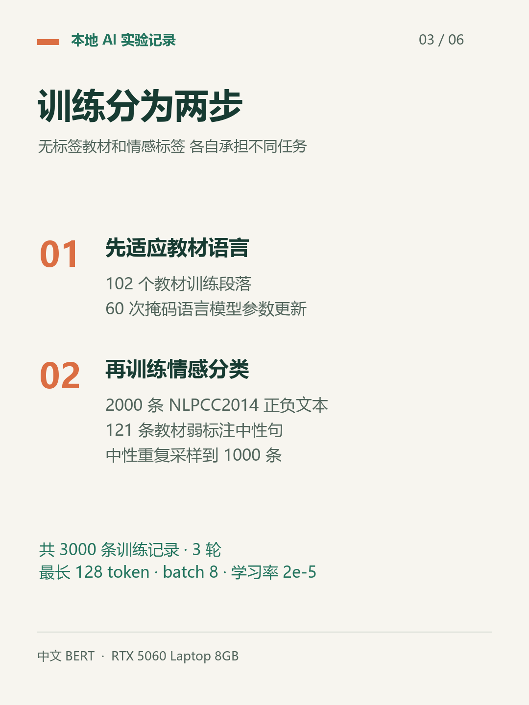
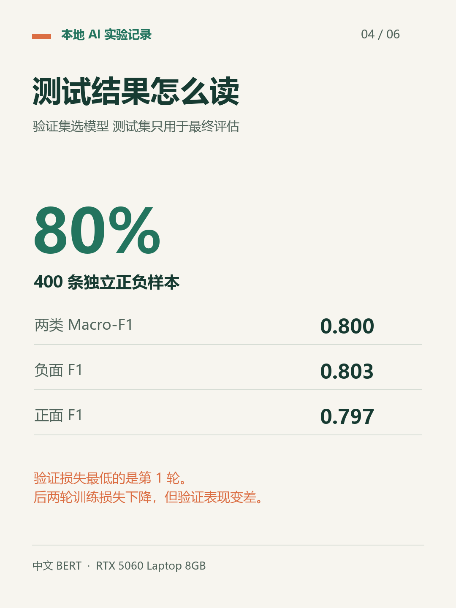
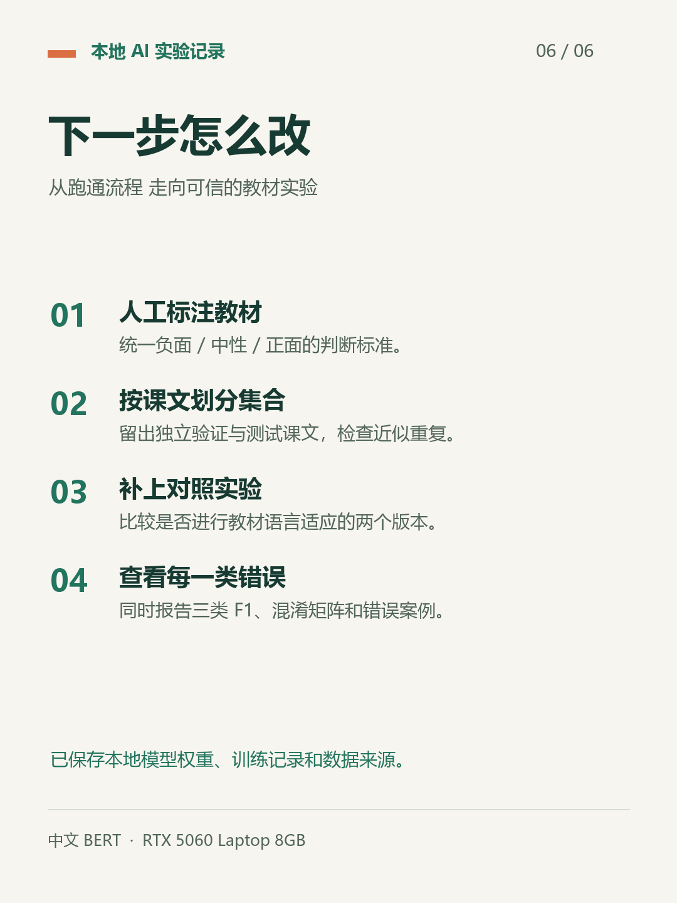

中文 BERT 教材情感分析实验
2026 年 10 月 10 日 · 本机训练记录与小红书发布素材
独立正负测试集准确率 80%，不是教材三分类准确率。
01_封面02_目标与环境
03_训练流程
04_测试结果05_实验边界
06_后续计划 可复制发布文案
在笔记本上微调中文BERT
我在自己的笔记本上，跑了一次中文 BERT 的教材情感分析实验。📚
模型用的是 bert-base-chinese，显卡是 RTX 5060 Laptop 8GB。教材从 GitHub 的《动手学深度学习》中选了线性代数、微积分和概率章节。
这里有个关键点：教材没有情感标签，直接让模型读课文，并不会自动获得情感分类能力。
所以我分了两步：
① 用 102 个教材段落做 60 次掩码语言模型更新，让模型先适应教材语言。
② 用 NLPCC2014 的 2000 条正负文本，加上 121 条规则筛选的中性教材句，训练情感分类。中性句重复采样到 1000 条，共 3000 条训练记录。
跑完 3 轮后，按验证损失保留了第 1 轮模型。独立的 400 条正负测试样本上，准确率是 80%，两类 Macro-F1 约 0.800。✅
另外，25 个未参与训练的教材段落都被预测为中性。
但这不等于“教材准确率 100%”：这些段落没有人工标签。80% 也只对应正负测试集，中性类用了弱标签，三分类效果还没被充分验证。
这次让我看到，训练损失越低，模型也未必越好：后两轮训练损失下降，验证表现反而变差。
下一步准备人工标注教材、按课文划分测试集，再比较有无教材语言适应的效果。
这是一轮跑通本地训练流程的初步实验，模型权重、数据来源和训练记录都已保存。
#人工智能 #深度学习 #BERT #自然语言处理 #情感分析 #模型微调 #机器学习 #学习记录
完整实验记录与来源 · 纯文本正文